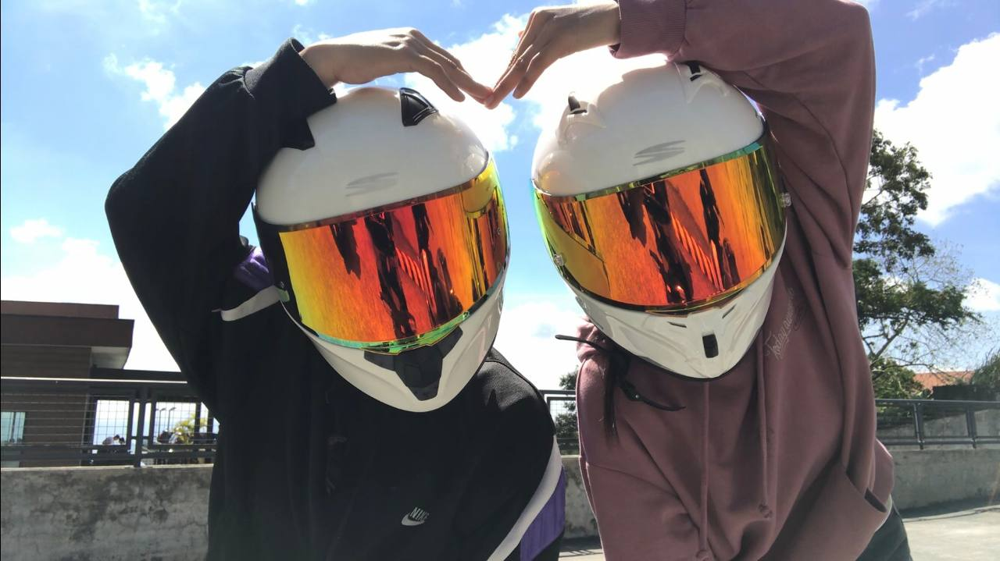

On this special day, I just want you to know how grateful I am that you were born. Kasi kung hindi, hindi kita makikilala, hindi ko mararanasan yung pagmamahal na binibigay mo. You are one of the greatest blessings in my life, and I thank God every day for you. Hoping maging super happy ka today on your birthday. I hope mapasaya kita and ma-feel mo na this is not just an ordinary day, but a very important one.
Sana lahat ng pangarap mo matupad. I pray that the Lord continues to bless you, guide you, and protect you because you truly deserve every good thing in this world. Nakikita ko lahat ng sacrifices mo, even the small things na akala mo hindi ko napapansin. I see you. I appreciate you. And I’m so proud of you.
Alam ko ang dami nating tampuhan at away nitong mga nakaraan. May mga times na parang susuko na ako kasi sobrang bigat at sobrang tampo ko sayo, alam mo naman yung dahilan diba. Pero sana ngayong birthday mo, ma-realize mo din na kahit minsan sundin mo naman ako haha. Ang sakit lang kasi for me pag ganun ka. Hindi naman ito panunumbat, pero every time na nangyayari yun, ang dami kong sacrifices na ginagawa. Naiistorbo ko ibang tao, ako lagi yung nag-aadjust. Nakakalungkot lang kasi minsan pakiramdam ko pagdating sayo, hindi ako ganun ka-priority. Pero sabi mo nga, hindi ka kagaya ko, so okay. Sorry din kung minsan sumosobra ako. Hindi naman yun mangyayari kung walang dahilan. Sana maintindihan mo din para hindi mo ma-misinterpret.
Sorry if minsan nasasaktan kita with my words kapag galit ako. Hindi ko yun talaga minimean. I just care so much, and sometimes my emotions get too heavy. Oo, nakakapagod minsan, pero yung pagmamahal ko sayo mas nangingibabaw pa rin. Iniintindi ko na lang din lahat. Oo, minsan sobra ka na, pero wish ko lang sana wag mo naman akong ubusin.
Ikaw ang pinaka favorite kong nangyari sa buhay ko. Lahat ng memories natin — bad man or good — super thankful ako kasi naranasan ko yun with you. I will always love you, and I always will. Nandito lang ako lagi para sayo. Hindi mo lang ako girlfriend, partner mo ako. If may problema ka, tell me. Makikinig ako. Wag mo lang sa iba gawin kasi anong sense ko dito kung iba yung nilalapitan mo. If may problem ka sakin, sabihin mo din. Let’s fix things together.
I’m excited after 5 years. Gusto kong makita na nag-grow tayo together, may stable work na tayo, and natupad natin yung mga pangarap natin together. Magkaroon ng sariling bahay, makapag-travel around the world, harapin ang lahat ng problema magkasama, at magkaroon ng sariling sasakyan para hindi na tayo nababasa pag umuulan hehe. Gusto kong maranasan at matupad lahat ng yan with you. Simple man pakinggan, but with you, they feel magical. I will always choose you. I will always fight for us. And I will always love you in all ways, always.
Happy birthday, baby 🫶😘 You deserve the world, and I promise to stand beside you while you conquer it. I love youuuu ❤!!